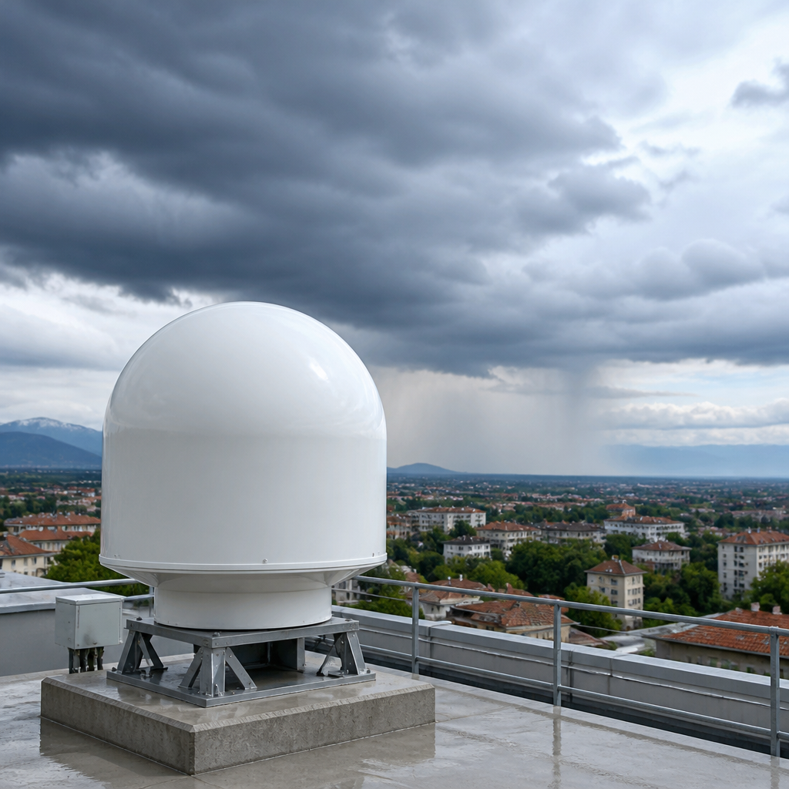
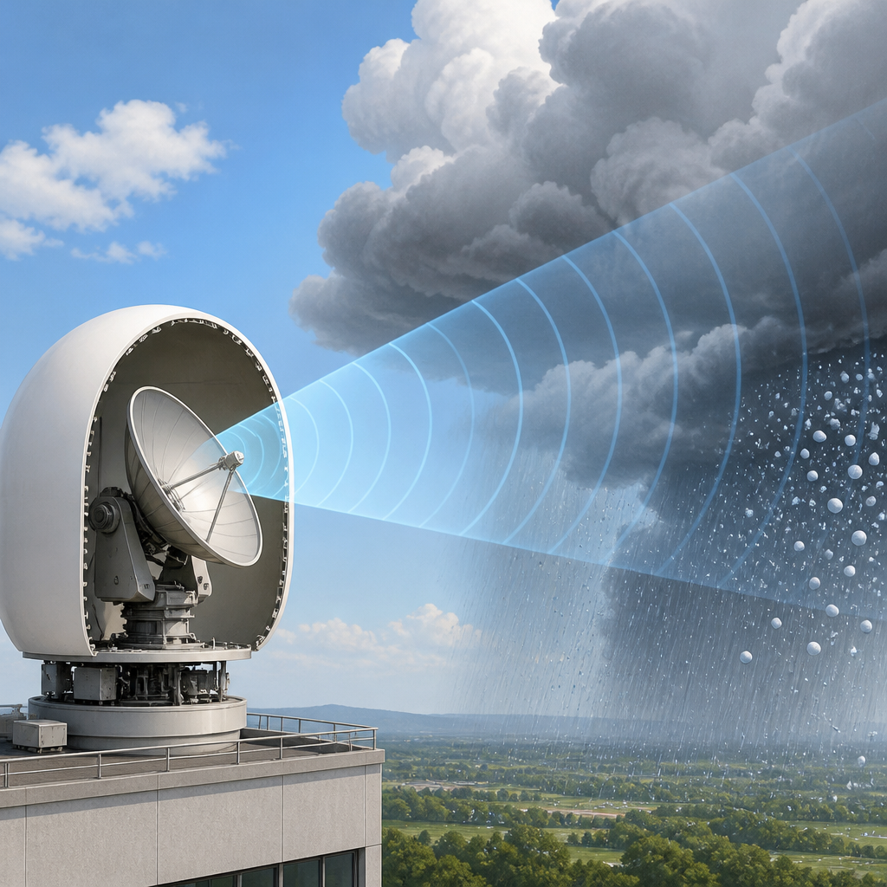

L’impianto rafforzerà l’osservazione delle precipitazioni nel sud-ovest lombardo e il supporto alla Protezione civile.
Un nuovo radar meteorologico di Arpa Lombardia sarà installato presso la Facoltà di Ingegneria dell’Università di Pavia. L’impianto avrà il compito di rafforzare l’osservazione delle precipitazioni, migliorare il monitoraggio degli eventi meteorologici estremi e contribuire alla prevenzione dei rischi naturali. Il radar entrerà nel sistema di monitoraggio idrometeorologico regionale: un insieme di strumenti dedicati all’osservazione di fenomeni legati a atmosfera e acqua.
L’investimento supera 1,17 milioni di euro ed è finanziato dal Ministero dell’Ambiente e della Sicurezza Energetica nell’ambito del Piano nazionale di ripresa e resilienza. Le spese di installazione saranno a carico del Ministero, mentre Arpa Lombardia sosterrà la gestione futura dello strumento. La realizzazione è prevista nei prossimi giorni.
Il radar sarà collocato sul tetto del vano scale dell’edificio 34 del Campus di via Ferrata. Il sito è stato scelto perché offre una posizione favorevole per monitorare le precipitazioni nell’area pavese e milanese, una buona visibilità dell’orizzonte e le infrastrutture necessarie per l’alimentazione elettrica e la trasmissione dei dati.
Nella scelta hanno contato anche aspetti strutturali, logistici e sanitari. Il tetto è ritenuto adatto a sostenere il radar e le strutture accessorie, permettendo di limitare l’altezza del traliccio e di organizzare in sicurezza gli accessi per installazione e manutenzione. La collocazione nell’Università evita inoltre la costruzione di un nuovo traliccio di grandi dimensioni, contenendo interventi infrastrutturali e relativi costi economici e ambientali. È stata considerata con particolare attenzione anche l’esposizione ai campi elettromagnetici a radiofrequenza.
Un radar meteorologico invia impulsi di onde elettromagnetiche nell’atmosfera e riceve i segnali che vengono riflessi dalle idrometeore, cioè particelle d’acqua o ghiaccio nell’aria come gocce di pioggia e grandine. Elaborando questi echi di ritorno, il sistema può ricavare la distanza delle precipitazioni, la loro intensità e informazioni sul tipo di idrometeore osservate.
L’antenna ruota continuamente e compie scansioni a diverse elevazioni. Per il modello WR-JL400-SX indicato per l’installazione, la scansione completa del volume atmosferico richiede circa due minuti. Il sistema opera in banda X, utilizza un’antenna a doppia polarizzazione di 2 metri e ha un’ampiezza del fascio di 1,2 gradi. Il radar sarà racchiuso in un radome, un involucro radio-trasparente che protegge la struttura.

Arpa Lombardia dispone già di una rete composta da 318 stazioni meteorologiche, 70 stazioni idrometriche e 46 stazioni nivometriche, oltre a tre radar meteorologici in banda X. Le stazioni idrometriche osservano i livelli dell’acqua, mentre quelle nivometriche sono dedicate alla neve. La rete radar dell’Agenzia comprende gli impianti di Desio, Flero e Bormio.
Il potenziamento risponde anche ai limiti dei soli pluviometri, gli strumenti che misurano la pioggia nel punto in cui sono installati. Durante la stagione estiva, i temporali possono produrre precipitazioni intense e molto localizzate. In queste situazioni, il radar permette di osservare a distanza come le piogge sono distribuite e con quale intensità, fornendo dati complementari a quelli delle stazioni al suolo.
L’impianto di Pavia punta quindi a migliorare la copertura radar ad alta risoluzione spaziale e temporale del sud-ovest lombardo, a integrare il monitoraggio dell’area di Milano e della Brianza e a rafforzare la rete regionale e nazionale usata anzitutto dal sistema di Protezione civile. Le informazioni possono contribuire al servizio di allerta precoce attraverso l’app RadarLOM, che segnala l’avvicinarsi di temporali intensi e la possibile presenza di grandine.
La presenza dello strumento nel Campus potrà favorire collaborazioni didattiche e scientifiche tra Arpa Lombardia e Università di Pavia. I dati ad alta risoluzione raccolti dal radar potranno essere impiegati in progetti su idrologia, gestione del rischio idraulico, telerilevamento ed elaborazione dei segnali, oltre a offrire agli studenti dati reali per tesi di laurea.
Il radar sarà installato sul Campus di via Ferrata dell’Università di Pavia. Osserverà le precipitazioni nel sud-ovest della Lombardia e integrerà la rete di Arpa Lombardia, già formata da stazioni al suolo e tre radar in banda X. L’obiettivo è disporre di dati più completi e tempestivi per il monitoraggio delle piogge, la prevenzione e la protezione del territorio.
Questo articolo l'hai letto sul blog di Meteo News Radar: un'app che ti mostra da dove vengono i numeri, invece di limitarsi a dartelo. E ogni mattina ne trovi uno nuovo come questo.